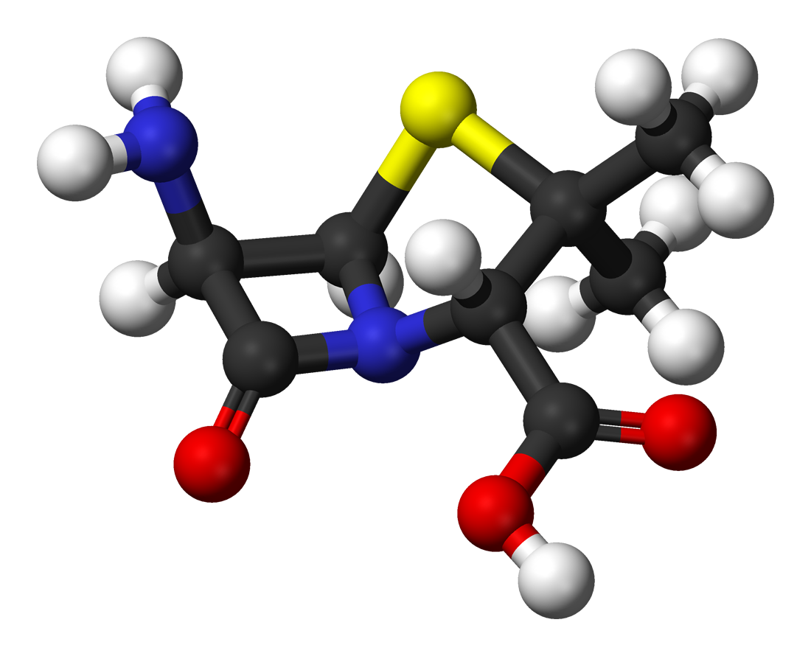

| Field | Organic chemistry; medicinal chemistry; pharmaceutical chemistry |
| Main goals | Waste prevention; safer synthesis; atom economy; safer solvents; catalysis; lifecycle thinking |
| Key metrics | Atom economy (AE); E-factor; process mass intensity (PMI) |
| Example case | 6-Aminopenicillanic acid (6-APA) via penicillin G acylase |
| Related topics | Sustainable chemistry; biocatalysis; process chemistry; late-stage functionalization |
Green chemistry in medicinal chemistry refers to the design of synthetic routes for drug candidates and active pharmaceutical ingredients (APIs) that minimize hazardous reagents, reduce solvent use, improve atom efficiency, and lower waste generation per unit of product. The framework is based on the twelve principles of green chemistry formulated by Anastas and Warner in 1998,[5] applied to the specific constraints of pharmaceutical synthesis and drug discovery.[1]
Pharmaceutical synthesis is among the most waste-intensive sectors of the chemical industry. The E-factor—mass of waste per mass of product—for fine chemicals and APIs has been reported in the range of 25–100, compared with values below 5 for bulk petrochemicals.[1] The high waste burden reflects multi-step routes, large solvent volumes used in workup and purification, and stoichiometric reagents that generate by-products rather than being catalytically regenerated. Three mass-based metrics are widely used to evaluate route efficiency: atom economy (AE), E-factor, and process mass intensity (PMI).[3]
Synthetic strategies investigated under this framework include transition-metal and enzymatic catalysis, solvent substitution, metal-free late-stage functionalization, multicomponent reactions, and continuous flow processing.[2] A commonly cited pharmaceutical example is the production of 6-aminopenicillanic acid (6-APA) using immobilized penicillin G acylase, which replaces a solvent-intensive chemical hydrolysis with an aqueous enzymatic step at near-ambient temperature.[7]
The approach has practical limitations. Mass-based metrics do not capture reagent toxicity or lifecycle energy demand. Routes that are viable at discovery scale may not transfer directly to manufacturing scale, and greener alternatives may require re-optimization or regulatory revalidation.[3]
Figure 1. Representative β-lactam structures relevant to the 6-APA case study. Penicillin G is the fermentation-derived substrate; penicillin G acylase converts it to 6-APA, which is reacylated to give semisynthetic antibiotics such as amoxicillin and ampicillin. Images: Wikimedia Commons, public domain.
1 Background
1.1 Definition of green chemistry
Green chemistry, also termed sustainable chemistry, is a design framework for reducing or eliminating hazardous substances at the point of synthesis rather than managing them as waste after the fact.[5] It was systematized by Paul Anastas and John Warner in their 1998 monograph Green Chemistry: Theory and Practice, which organized the field around twelve principles addressing reaction design, solvent choice, reagent selection, energy efficiency, and end-of-life considerations for chemical products. [4]
In synthetic chemistry, the practical consequence is that route design is evaluated not only by yield and selectivity but also by waste generated per unit of product, the hazard profile of reagents and solvents, the number of synthetic steps, and whether catalytic rather than stoichiometric methods can be employed.[1]
1.2 Chemical and process context
In medicinal chemistry, the design of a synthetic route determines not only which bonds are formed but also how much material must be handled, purified, and disposed of at each step. A route requiring five protecting group manipulations, three chromatographic purifications, and two chlorinated solvents will have a higher PMI and E-factor than a convergent route using catalytic transformations and aqueous workups, even if both routes deliver the same target molecule in comparable yield.[2]
Small changes in route design—replacing a stoichiometric oxidant with a catalytic system, substituting dichloromethane with ethyl acetate, or combining two steps into one pot—can reduce solvent consumption and waste substantially. Because solvents typically account for 80–90% of the total mass used in a pharmaceutical synthesis,[6] solvent selection has a disproportionate effect on PMI even when the chemistry itself is otherwise unchanged.
1.3 The 12 principles
The twelve principles of green chemistry, as listed by the American Chemical Society, are:[5] (1) waste prevention; (2) atom economy; (3) less hazardous chemical syntheses; (4) designing safer chemicals; (5) safer solvents and auxiliaries; (6) design for energy efficiency; (7) use of renewable feedstocks; (8) reduction of derivatives; (9) catalysis; (10) design for degradation; (11) real-time analysis for pollution prevention; and (12) inherently safer chemistry for accident prevention.
In pharmaceutical synthesis, principles 1–3, 5, 9, and 10 are most directly applicable to route design decisions.[3] Not all twelve principles can be simultaneously satisfied in every synthesis, and trade-offs between yield, cost, selectivity, and environmental metrics are common.
1.4 Why pharmaceutical synthesis produces high waste
E-factors for fine chemicals and pharmaceutical APIs have been reported in the range of 25–100 kg waste per kg product; individual multi-step drug syntheses can exceed 100.[1] Bulk petrochemicals, by contrast, typically have E-factors below 5. The disparity arises from several compounding factors.
Multi-step routes accumulate yield losses at each step, so the mass of starting materials consumed per unit of final product increases with step count. Protecting groups—installed to direct selectivity and removed afterward—add steps that contribute reagents, solvents, and by-products without incorporating atoms into the target molecule. Organic solvents used for reaction, workup, extraction, and chromatographic purification represent the largest single contributor to the PMI of most pharmaceutical routes.[6]
At manufacturing scale—sometimes hundreds of tonnes per year for high-volume APIs—even a modest reduction in solvent use per kilogram of product translates into large reductions in total solvent consumption, waste treatment cost, and environmental discharge. [3]
2 Key concepts and metrics
Several mass-based metrics have been developed to quantify the resource efficiency of synthetic routes. Each metric captures a different aspect of the process, and none alone provides a complete environmental assessment.[1][3]
Table 1. Mass-based metrics used in pharmaceutical route evaluation
| Metric | Formula | What it measures | Key limitation |
|---|---|---|---|
| Atom economy (AE) | MWproduct / ΣMWreactants × 100% | Theoretical fraction of reactant atoms incorporated into product | Ignores solvent, excess reagents, actual yield, and toxicity |
| E-factor | mass waste / mass product | Waste generated per unit of product (from experimental data) | Waste definition varies; does not weight by hazard |
| Process mass intensity (PMI) | total mass input / mass product | Overall material use per unit of product; PMI = E-factor + 1 | Does not directly reflect reagent toxicity or energy use |
All three metrics are mass-based and should be used together with solvent EHS scores, reagent hazard data, and energy consumption for a complete process assessment. [3][6]
2.1 Atom economy
Atom economy (AE), introduced by Barry Trost in 1991, is the ratio of the molecular weight of the desired product to the sum of the molecular weights of all reactants:[1]
AE = (MWproduct / ∑MWreactants) × 100%
A reaction with AE = 100% incorporates all reactant atoms into the product. Cycloadditions such as the Diels–Alder reaction approach this limit. Substitution reactions that eject a leaving group, reactions requiring stoichiometric protecting groups, and transformations that produce inorganic salt by-products all have inherently lower AE. Because AE is a theoretical value derived from a balanced equation, it does not account for solvent, excess reagents, or actual isolated yield, and should be interpreted alongside E-factor and PMI. [4]
2.2 E-factor
The E-factor, introduced by Roger Sheldon, is defined as the total mass of waste generated divided by the mass of product isolated:[1]
E-factor = mass of waste (kg) / mass of product (kg)
Unlike AE, the E-factor is calculated from experimental data and includes solvents used in reaction workup and purification. A lower E-factor corresponds to a more mass-efficient process. A limitation is that standard E-factor calculations do not weight waste streams by toxicity: one kilogram of sodium chloride and one kilogram of dichloromethane contribute equally to the E-factor.[3] Treatment of water as waste or not waste also varies between published calculations.
2.3 Process mass intensity
Process mass intensity (PMI) is the total mass of all inputs—reagents, solvents, catalysts, and water—divided by the mass of product:[3]
PMI = total mass of materials (kg) / mass of product (kg)
By definition, PMI = E-factor + 1. The ACS Green Chemistry Institute Pharmaceutical Roundtable has adopted PMI as its preferred comparative metric because it can be calculated consistently from process records and is inclusive of all material inputs.[6] Reported PMI values for API syntheses vary widely; industry benchmarks suggest values below 100 represent reasonable process efficiency, with values below 10 achievable only for short, highly optimized routes.
2.4 Solvent selection
Solvents typically account for 80–90% of the total mass used in a pharmaceutical synthesis.[6] Solvent selection therefore has a larger effect on PMI than the choice of reagents in most cases. Solvent guides published by the ACS GCI Pharmaceutical Roundtable and by individual companies rank solvents by environmental, health, and safety (EHS) criteria. Preferred solvents include water, ethanol, isopropanol, ethyl acetate, and 2-methyltetrahydrofuran (2-MeTHF, derived from furfural). Solvents classified as problematic or to be avoided include dichloromethane, dimethylformamide (DMF), N-methyl-2- pyrrolidone (NMP), and chlorinated aromatic solvents.[6]
Solvent substitution is not always straightforward. Some transformations require polar aprotic solvents for adequate nucleophilicity or solubility, and changing solvent may alter reaction rate, selectivity, or byproduct profile in ways that require re-optimization. [2]
2.5 Reagent choice and by-product formation
Stoichiometric oxidants such as chromium(VI) reagents or potassium permanganate generate heavy-metal waste streams; catalytic alternatives including TEMPO/hypochlorite systems and enzymatic oxidases can reduce metallic waste and, in some cases, enable aqueous conditions.[1] Stoichiometric reductants such as lithium aluminum hydride generate reactive residues and require anhydrous solvents; transfer hydrogenation catalysts and ketoreductase enzymes offer alternatives that are more compatible with aqueous workups and generate less hazardous waste.[2]
Coupling reagents used in amide bond formation—a frequent transformation in medicinal chemistry—are a known source of stoichiometric waste. Each equivalent of coupling reagent produces one equivalent of a urea or active-ester by-product. Catalytic methods for direct amide bond formation are an active area of research but have not yet matched the scope of reagent-mediated methods.[4]
3 Applications in medicinal chemistry

3.1 Catalysis and biocatalysis
Principle 9 of the twelve principles specifies catalytic reagents as preferable to stoichiometric ones, because a catalyst is regenerated in each cycle and does not appear in the waste stream in proportion to the amount of product formed.[5] In pharmaceutical synthesis, palladium-catalyzed cross-coupling reactions—including Suzuki–Miyaura, Buchwald–Hartwig, and Negishi couplings—have largely replaced stoichiometric organometallic methods for C–C and C–N bond formation, reducing the quantity of metallic waste per step. [2]
Biocatalysis uses enzymes or whole cells to catalyze synthetic transformations. Enzymatic steps are investigated in pharmaceutical synthesis because they can provide high chemo-, regio-, and enantioselectivity under mild, often aqueous, conditions without stoichiometric chiral auxiliaries.[1] Protein engineering and directed evolution have expanded enzyme substrate scope beyond natural substrates. Commonly applied enzyme classes include ketoreductases (asymmetric ketone reduction), ω-transaminases (reductive amination to chiral amines), and acylases (selective amide hydrolysis).[7] However, each enzyme requires optimization for the specific substrate, and factors such as enzyme cost, stability, substrate loading, and downstream separation must also be evaluated.
3.2 Water and alternative solvents
Water is non-toxic, non-flammable, and inexpensive. Reactions that proceed in aqueous media include Diels–Alder cycloadditions (accelerated by hydrophobic compression), certain aldol condensations, and organocatalytic transformations.[4] The main limitation for pharmaceutical substrates is poor water solubility of lipophilic intermediates, which may require co-solvents or micellar additives.
Alternative solvents investigated for pharmaceutical use include supercritical carbon dioxide (scCO2, which leaves no residue and can be recycled), bio-derived solvents such as 2-MeTHF (from furfural) and cyrene (from cellulose), and deep eutectic solvents (DES). Ionic liquids have low vapor pressure but have raised concerns about aquatic toxicity and limited biodegradability.[1] Each alternative requires evaluation of cost, reactant solubility, reactivity, recovery, and regulatory acceptability before adoption in a manufacturing route.
3.3 Metal-free and late-stage functionalization
Metal residues in API intermediates require removal to meet regulatory guidelines, which adds purification steps and associated solvent waste.[2] Metal-free late-stage functionalization (LSF) refers to the direct introduction or modification of functional groups on an advanced intermediate or final compound, bypassing earlier steps and reducing cumulative waste. Reactions in this category include photocatalytic and electrochemical C–H functionalization, radical-based C–F and C–N bond formation, and organocatalytic asymmetric transformations.[2]
LSF can reduce the number of synthetic steps required to access a set of structural analogs: a single transformation applied to a common scaffold can replace multiple complete syntheses from different starting materials. The approach requires that the functionalization reagent or photocatalyst tolerates the functional groups already present on the molecule.
3.4 One-pot and multicomponent reactions
One-pot reactions perform multiple bond-forming steps in a single vessel without isolating intermediates, thereby eliminating the solvent and reagent costs of intermediate workup and purification. Multicomponent reactions (MCRs) such as the Ugi four-component reaction and the Biginelli condensation incorporate three or more reactants into a single product in a convergent bond-forming event.[4] Both approaches reduce step count, decrease cumulative solvent use, and can improve overall yield by avoiding losses at each isolation step.
Cascade or domino reactions, where the product of one step serves directly as the substrate for the next without a change in conditions, offer similar advantages. A practical limitation is that combining multiple reaction steps in one pot requires compatible conditions—pH, temperature, solvent, and catalyst—for all transformations simultaneously, which may require extensive optimization.[1]
3.5 Continuous flow processing
In continuous flow chemistry, reactants are pumped through a reactor channel or tube rather than processed in a stirred batch vessel. Flow reactors provide high surface-area-to-volume ratios, enabling precise temperature control and rapid mixing. This can improve heat transfer for exothermic reactions, allow safe handling of hazardous intermediates at low instantaneous inventory, and enable in-line monitoring and automated feedback.[3]
Flow chemistry has been applied to pharmaceutical steps that are hazardous in batch scale, including diazotizations, nitrations, and high-pressure hydrogenations. Reduced solvent inventory in the reactor at any given time can lower total solvent consumption and waste generation relative to an equivalent batch process. Regulatory agencies have accepted continuous manufacturing for API production, and its adoption in the pharmaceutical industry has grown.[3]
4 Case study: 6-aminopenicillanic acid
4.1 Chemical background
6-Aminopenicillanic acid (6-APA) is the bicyclic β-lactam–thiazolidine nucleus of the penicillin family. It is produced industrially by hydrolysis of the phenylacetyl side chain of penicillin G (benzylpenicillin), which is itself obtained by fermentation of Penicillium chrysogenum. 6-APA is used as the core intermediate for semisynthetic β-lactam antibiotics: reacylation of the free amine with different acyl chlorides or mixed anhydrides gives ampicillin, amoxicillin, and related compounds. [7] Industrial production is estimated at several thousand tonnes per year.

4.2 The enzymatic route
The earlier chemical method for 6-APA required protecting both the carboxyl group and the secondary amine of penicillin G before performing the deacylation, then removing the protecting groups—a sequence consuming anhydrous methylene chloride and dimethylaniline at temperatures near −40 °C, and generating silylated or phosphorylated by-products. [7]
The enzymatic route employs immobilized penicillin G acylase (PGA; EC 3.5.1.11), most commonly sourced from Escherichia coli. PGA catalyzes selective hydrolysis of the phenylacetyl amide bond under aqueous conditions at pH 7–8 and 25–35 °C, without organic solvent in the hydrolysis step and without protection of the β-lactam ring.[7] The enzyme is immobilized on a solid support and can be recovered and reused over multiple batch cycles, reducing the per-kilogram cost and waste contribution of the enzyme itself.
The enzymatic process eliminates cryogenic conditions, removes the organic solvent requirement from the hydrolysis step, and produces phenylacetic acid as a recoverable by-product. It has become the dominant industrial process for 6-APA manufacture.[7]
4.3 Process assessment
The enzymatic hydrolysis step is commonly cited as a pharmaceutical example of green biocatalysis. A complete process assessment, however, requires data beyond the reaction step itself: solvent use in downstream crystallization and purification of 6-APA; energy input for fermentation and enzyme production; the lifetime, regeneration frequency, and disposal pathway of the immobilized support; yield relative to the penicillin G feedstock; and the treatment of aqueous waste streams containing phenylacetic acid and residual substrate.[3]
The use of water as the reaction solvent at one step does not by itself establish that the overall process has a low PMI or E-factor. Full lifecycle and PMI data covering all upstream and downstream steps are required to compare the enzymatic route rigorously against the earlier chemical route.[1]
5 Limitations and critical assessment
5.1 Mass-based metrics do not capture hazard or lifecycle impact
Atom economy, E-factor, and PMI are mass-based: they record how much material flows through a process per unit of product, but they assign equal weight to all waste regardless of toxicity, persistence, or bioaccumulation potential.[3] One kilogram of sodium chloride and one kilogram of a chlorinated solvent contribute equally to the E-factor. Hazard-weighted metrics, EHS scoring systems, and life-cycle assessment (LCA) can supplement mass metrics but require more data and are more complex to calculate.[4] Energy consumption, which affects carbon footprint, is also not captured by mass-based metrics alone.
5.2 Yield does not reflect process greenness
Chemical yield measures the fraction of a limiting reactant converted to product; it does not measure solvent consumption, reagent hazard, energy input, or waste treatment requirements. A reaction giving 95% yield in dichloromethane using a stoichiometric chromium oxidant may have a higher E-factor than a 70%-yield transformation using catalytic TEMPO in ethyl acetate. Reporting yield as a proxy for process greenness is a recognized source of misleading characterization in the primary literature.[1]
5.3 Discovery scale and manufacturing scale have different constraints
At discovery scale (milligrams to grams), medicinal chemists prioritize speed, reliability, and structural diversity. Routes at this stage use familiar, well-precedented reactions; process efficiency is secondary.[2] Systematic optimization for PMI, solvent reduction, and waste minimization typically occurs in process chemistry, the discipline that scales a candidate drug toward clinical and commercial manufacture. Applying manufacturing- scale green standards to early discovery routes conflates two distinct activities with different objectives.
5.4 Practical barriers to adoption
Greener alternatives may be technically superior on metrics but face practical obstacles. Biocatalytic steps require enzyme screening and engineering for each new substrate. Alternative solvents require re-optimization of reaction conditions and re-validation of analytical methods. Continuous flow equipment requires capital investment and training. Regulatory filings for a new manufacturing process require extensive validation data, which can delay adoption of improved routes even when environmental benefits are established.[3]
Purity requirements in pharmaceutical manufacturing create an additional constraint absent from commodity chemistry. A greener route that introduces a new impurity at even low levels may require additional purification or safety testing before regulatory acceptance, partially offsetting the environmental gain.[1]
6 See also
- Green chemistry
- Atom economy
- E-factor (chemistry)
- Biocatalysis
- Process chemistry
- Beta-lactam antibiotics
- Penicillin G acylase
- Continuous manufacturing (pharmaceuticals)
- Life-cycle assessment
- Late-stage functionalization
7 References
- [1] Kar, S.; Sanderson, H.; Roy, K.; Benfenati, E.; Leszczynski, J. "Green Chemistry in the Synthesis of Pharmaceuticals." Chemical Reviews 2022, 122(3), 3637–3710. DOI: 10.1021/acs.chemrev.1c00631.
- [2] Lasso, J. D.; Castillo-Pazos, D. J.; Li, C.-J. "Green chemistry meets medicinal chemistry: a perspective on modern metal-free late-stage functionalization reactions." Chemical Society Reviews 2021, 50, 10955–10982. DOI: 10.1039/D1CS00380A.
- [3] Becker, J.; Manske, C.; Randl, S. "Green chemistry and sustainability metrics in the pharmaceutical manufacturing sector." Current Opinion in Green and Sustainable Chemistry 2022, 33, 100562. DOI: 10.1016/j.cogsc.2021.100562.
- [4] Zlotin, S. G.; Egorova, K. S.; Ananikov, V. P.; et al. "The green chemistry paradigm in modern organic synthesis." Russian Chemical Reviews 2024, 92(12), RCR5104. DOI: 10.59761/RCR5104.
- [5] American Chemical Society. "12 Principles of Green Chemistry." acs.org/greenchemistry. Retrieved 2026.
- [6] ACS Green Chemistry Institute Pharmaceutical Roundtable. "Solvent Selection Guide." acsgcipr.org. Retrieved 2026.
- [7] Tishkov, V. I.; Savin, S. S.; Yasnaya, A. S. "Protein Engineering of Penicillin Acylase." Acta Naturae 2010, 2(3), 47–61. PMID: 21152216; PMC: 3347614.
This page was created as an original educational resource for Chem 236. Diagrams (Figures 1–4) are original works created for this project and are not reproduced from journal articles. All citations refer to publicly available peer-reviewed literature.